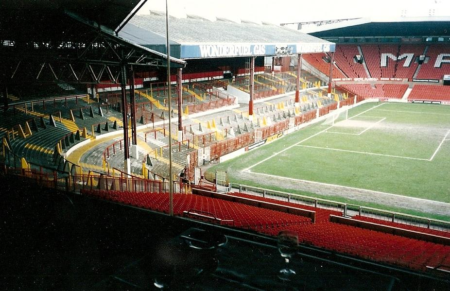
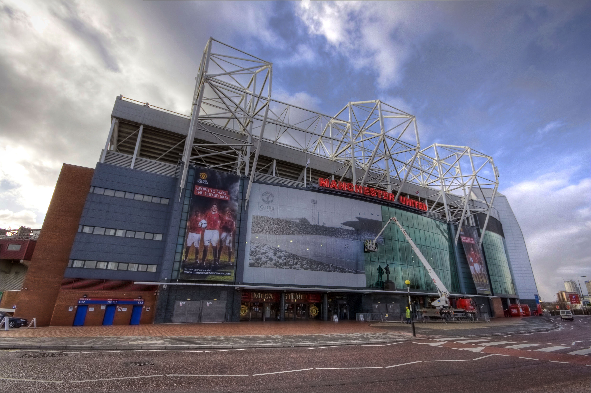

Sebuah atap ditempatkan kembali di Tribune Utama pada 1951 dan, segera setelahnya tiga tribune lainnya turut diberikan atap, dan operasi stadion mencapai puncak saat penambahan atap di Stretford End (kini Tribune Barat) tahun
1959. Klub juga menginvestasikan £40.000 untuk instalasi lampu sorot yang tepat, sehingga mereka dapat menggunakan stadion untuk pertandingan Eropa yang dimainkan pada malam hari kerja, daripada harus bermain di Maine Road. Guna
menghindari bayangan menonjol di lapangan, dua bagian atap di Tribune Utama dipotong. Permainan pertama yang dilakukan di bawah lampu sorot adalah pertandingan Divisi Satu antara United dan Bolton Wanderers pada 25 Maret 1957
- Penyelesaian masterplan
Namun, meski penonton dapat menonton pertandingan malam hari, mereka masih mengalami masalah akibat pandangan yang terhalang pilar yang menunjang atap. Dengan Piala Dunia FIFA 1966 yang semakin mendekat, direksi United didorong
menyelesaikan rancangan ulang tribune United Road (utara). Pilar atap yang lama diganti pada 1965 dengan penyangga pada atas atap dengan gaya modern, yang membuat semua penonton dapat melihat tanpa halangan dan juga diperluas
untuk menampung 20.000 penonton (10.000 berkursi dan 10.000 berdiri di depan) dengan biaya £350.000. Arsitek tribune yang baru, Mather dan Nutter (kini Atherden Fuller), menyusun ulang susunan tribune agar memiliki terasiring di
depan, area duduk yang lebih besar ke arah belakang, dan tempat duduk khusus pertama di lapangan sepak bola Inggris. Tribune timur—satu-satunya tribun tak tertutupi—dikembangkan dengan gaya yang sama pada 1973. Dengan dua tribun
pertama yang diubah menjadi berpenyangga, pemilik klub menyusun rencana jangka panjang untuk melakukan hal yang sama untuk dua tribun lainnya dan mengubah stadion menjadi seperti berbentuk mangkuk. Suatu usaha semacam itu akan
berfungsi untuk meningkatkan suasana di dalam stadion dengan kebisingan kerumunan dan fokus ke lapangan, di mana para pemain akan merasakan efek penuhnya kerumunan penonton. Sementara itu, stadion ini menjadi tuan rumah final
ketiga Piala FA, di mana 62.078 penonton hadir untuk pertandingan ulang final 1970 antara Chelsea dan Leeds United; Chelsea memenangkan pertandingan 2–1. Stadion ini juga menjadi tuan rumah pertandingan kedua Piala
Interkontinental 1968, di mana Estudiantes de La Plata memenangkan gelar setelah bermain imbang 1–1. Tahun 1970-an menjadi masa-masa peningkatan dramatis dari hooliganisme sepak bola di Inggris, dan insiden pelemparan pisau pada
tahun 1971 memaksa klub untuk mendirikan pagar perimeter pertama di negara itu, sehingga membatasi penonton dari lapangan Old Trafford
Pada tahun 1973, terjadi penyelesaian pekerjaan atap sepanjang keliling stadion, bersama dengan penambahan 5.500 kursi di Scoreboard End dan penggantian papan skor manual yang lama dengan salah satu papan skor elektronik di
sudut timur laut. Kemudian, pada tahun 1975, ekspansi senilai £ 3 juta dimulai, dimulai dengan penambahan Suite Eksekutif di Stand Utama. Restoran suite melewati lapangan, tetapi pandangan masih terhalang oleh pilar atap. Oleh
karena itu, untuk penyesuaian dengan atab pada Tribune United Road dan Scoreboard End, atap Tribune Utama diganti dengan desain kantilever. Suite Eksekutif dan atap kantilever kemudian diperpanjang hingga sepanjang penuh
tribune, sehingga memungkinkan untuk merelokasi kantor klub dari sudut tenggara ke Stand Utama. Kuadran tenggara kemudian dihilangkan dan diganti pada tahun 1985 dengan sebuah bagian duduk dengan total kapasitas tempat duduk
untuk 25.686 orang (56.385 secara keseluruhan). Penyelesaian atap kantilever di sekitar tiga sisi stadion memungkinkan untuk penggantian tiang lampu sorot yang telah tua, dan pelengkapan dari deretan lampu sorot di sekitar tepi
bagian dalam dari atap pada tahun 1987.
- Pengubahan menjadi berkursi

Dengan setiap perbaikan selanjutnya dilakukan untuk lapangan sejak Perang Dunia Kedua, kapasitas stadion terus menurun. Pada tahun 1980-an, kapasitas telah sangat turun dari awalnya 80.000 menjadi sekitar 60.000. Kapasitas turun
lebih jauh lagi pada tahun 1990, ketika Laporan Taylor telah merekomendasikan, dan pemerintah menuntut bahwa semua Stadion Divisi Pertama dan Kedua diubah menjadi sebuah stadion yang seluruhnya berkursi. Hal ini berarti bahwa
rencana senilai £3-5 juta untuk menggantikan Stretford End dengan tribune bermerek baru, di mana penonton akan berdiri dan atap kantilever untuk menghubungkan yang ada di sisi lain lapangan harus diubah secara drastis.
Pembangunan kembali yang terpaksa ini, termasuk penghapusan teras di depan tiga tribune lainnya, tidak hanya meningkatkan biaya untuk sekitar £10 juta, tetapi juga mengurangi kapasitas Old Trafford untuk menjadi sekitar 44.000.
Selain itu, klub diberitahu pada tahun 1992 bahwa mereka hanya akan menerima £1,4 juta dari kemungkinan £2 juta dari Football Trust untuk diletakkan terhadap pekerjaan yang terkait dengan Laporan Taylor.
Kebangkitan klub dalam kesuksesan dan peningkatan popularitas pada awal 1990-an memastikan bahwa pengembangan lebih lanjut akan terjadi. Pada tahun 1995, Tribune Utara yang telah berusia 30 tahun dihancurkan dan kemudian
pekerajaan cepat dimulai untuk membangun tribune yang baru, untuk siap pada waktunya bahwa Old Trafford menjadi tuan rumah tiga pertandingan babak penyisihan grup, perempat final dan semifinal pada Piala Eropa 1996. Klub membeli
kebun dagang Trafford Park, situs 20-ekar (81.000 m2) pada situs lainnya di United Road seharga 9,2 juta Euro pada Maret 1995. Konstruksi dimulai pada Juni 1995 dan selesai pada Mei 1996, dengan dua pertama dari tiga fase
pembukaan berdiri selama musim tersebut. Dirancang oleh Atherden Fuller, dengan Hilstone Laurie sebagai manajer proyek dan konstruksi, dan Campbell Reith Hill sebagai insinyur struktur, tiga lapis tribune yang baru berdiri
berbiaya total £18.650.000 untuk pembangunan dan memiliki kapasitas sekitar 25.500, sehingga meningkatkan kapasitas seluruh lapangan menjadi lebih dari 55.000. Kantilever atap juga menjadi yang terbesar di Eropa, dengan hasil
pengukuran sepanjang 585 m (1.919 ft) dari dinding belakang ke tepi depan. Keberhasilan pembangunan ke depan selama beberapa tahun yang akan datang belum dapat dipastikan. Pertama, lapis kedua telah ditambahkan di Tribune Timur.
Dibuka pada bulan Januari 2000, kapasitas stadion sementara meningkat menjadi sekitar 61.000 sampai pembukaan lapis kedua Tribune Barat, yang menambahkan 7.000 kursi lagi, sehingga kapasitas menjadi 68.217. Hal tersebut saat itu
membuat Old Trafford tidak hanya stadion klub yang terbesar di Inggris, tapi yang terbesar di seluruh Inggris. Old Trafford menyelenggarakan pertandingan final Eropa besarnya tiga tahun kemudian, menjadi tuan rumah Final Liga
Champions UEFA 2003 antara Milan dan Juventus.

Sejak tahun 2001 hingga 2007, seiring pembongkaran Stadion Wembley yang lama, tim nasional sepak bola Inggris terpaksa untuk memainkan pertandingan kandangnya di tempat lain. Selama waktu itu, tim berkeliling negeri, memainkan
pertandingan mereka di berbagai tempat dari Villa Park di Birmingham ke St James' Park di Newcastle. Sejak tahun 2003 sampai 2007, Old Trafford menyelenggarakan 12 dari 23 pertandingan kandang Inggris, lebih dari stadion lain.
Pertandingan internasional terakhir yang diadakan di Old Trafford adalah kekalahan 1–0 Inggris atas Spanyol pada 7 Februari 2007. Pertandingan itu dimainkan di depan 58.207 penonton.ng terbesar di Inggris, tapi yang terbesar di
seluruh Inggris. Old Trafford menyelenggarakan pertandingan final Eropa besarnya tiga tahun kemudian, menjadi tuan rumah Final Liga Champions UEFA 2003 antara Milan dan Juventus.
- Penyelesaian masterplan
Ekspansi terbaru Old Trafford berlangsung antara Juli 2005 dan Mei 2006, membuat stadion mengalami peningkatan kapasitas sekitar 8.000 kursi dengan penambahan pada tingkat kedua baik untuk kuadrat timur laut maupun barat
laut.[34] Bagian tempat duduk baru pertama kali digunakan pada 26 Maret 2006, saat mencapai rekor kehadiran 69.070 dalam pertandingan Liga Utama Inggris.[46] Rekor kehadiran terus meningkat hingga mencapai puncaknya pada 31
Maret 2007, di mana 76.098 penonton hadir saat United mengalahkan Blackburn Rovers dengan skor 4–1, yang berarti hanya 114 kursi (0,15% dari kapasitas total 76.212) yang tidak terisi.[47] Pada tahun 2009, penataan ulang kursi
stadion menghasilkan penurunan jumlah kursi sebanyak 255 menjadi 75.957, yang bearti rekor kehadiran kandang United di stadion ini akan bertahan sampai ekspansi berikutnya
Baca Selengkapnya